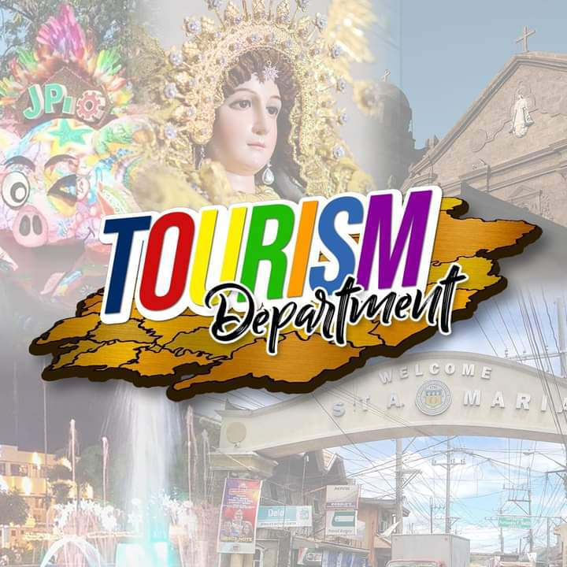

At EasyKay, we are committed to simplifying your commuting experience in Santa Maria, Bulacan (SMB). It is designed
with the sole purpose of providing you with easy access to essential transportation information and services.
We're here to be your companion in commuting.
Developed and supported by the Santa Maria Bulacan Tourism and
Cultural Affairs Office, it is dedicated to making your visit to SMB extraordinary, convenient, and unforgettable.
With EasyKay, you can plan your commute beforehand, as the SMB directions are already in your pocket.
The Santa Maria Bulacan Tourism and Cultural Affairs Office
The Santa Maria Bulacan Tourism and Cultural Affairs Office is on a mission to showcase the unique beauty and cultural richness of Santa Maria to the world and is committed to promoting sustainable tourism practices while preserving the authenticity and charm of the city.
What EasyKay Offers
- User-Friendly Interface: We have designed our interface with simplicity in mind. Whether you're a registered user or a guest, you can easily navigate through EasyKay.
- Transparent Fare Matrix: Get complete clarity on transportation costs with our updated fare matrix.
- Stay Informed: Keep yourself informed about the latest happenings in Santa Maria, including city events, promotions, and announcements.
- Commuting Made Easy: Plan your route, know your estimated time of arrival (ETA), and understand the total cost of your travel.
- Alternative Choices: We provide you with information on alternative transportation options, helping you make informed decisions for your journey.